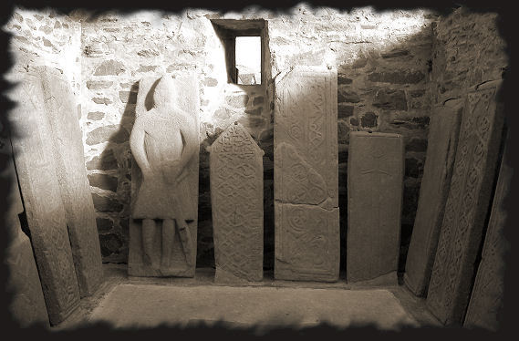
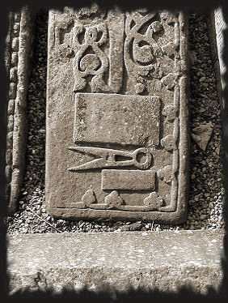
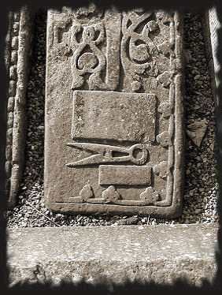

Des moines guerriers templiers aux frères laïques francs-maçons...
La franc-maçonnerie est-elle née en Écosse ? Descend-elle de la lignée initiatique des Templiers réfugiés ici après la funeste journée du 13 octobre 1307 ? Robert Ier (the Bruce) a-t-il accueilli les chevaliers du Temple pour profiter d’une science militaire qui le mènera à la victoire de Bannockburn et à l’indépendance ?
Les réponses à ces questions se trouvent peut-être dans cette église de Kilmartin où se situent d’étonnants alignements de pierres tombales templières, représentant des chevaliers, des bateaux de la flotte templière, des têtes de mort ou simplement des épées gravées dans la pierre (caractéristiques des tombes templières). Le plus étrange est qu'elles sont également décorées de symboles maçonniques tels que l'équerre ou le compas.
De nombreuses pierres tombales templières d'Argyll ont été regroupées dans le cimetière de Kilmartin.
Elles prouvent que l'Ordre du Temple a survécu en Écosse après 1312, année de sa dissolution officielle.

L'ordre s'est d'abord occulté et laïcisé, puis il a donné naissance à la franc-maçonnerie. 
